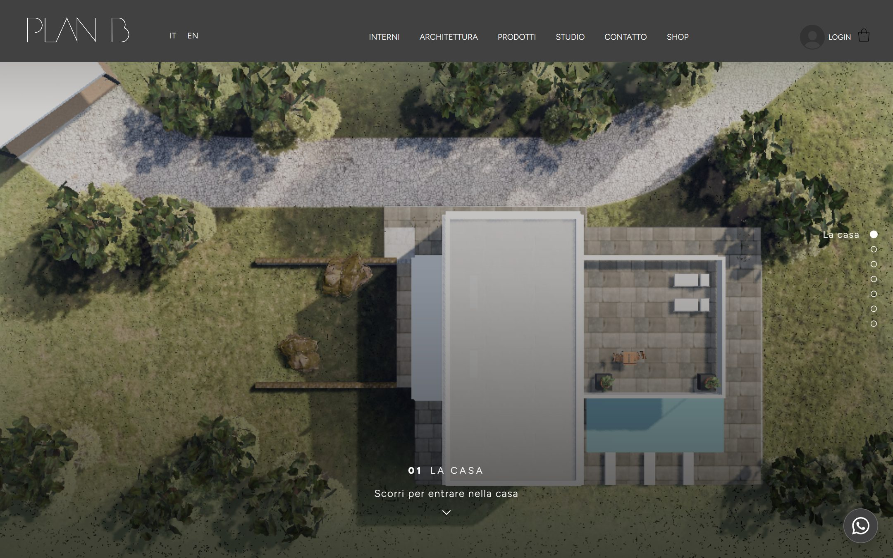
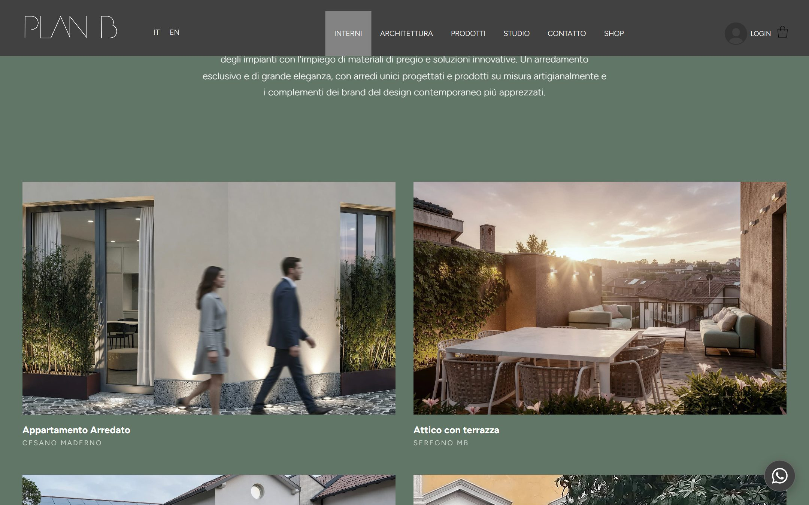
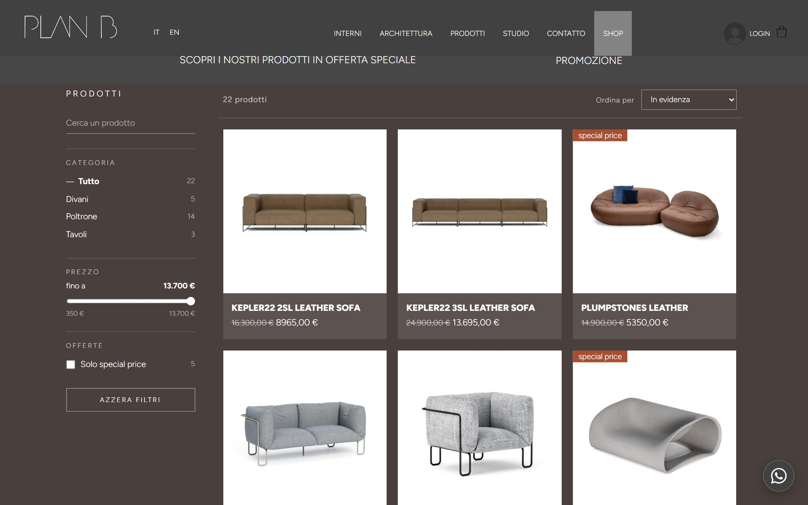
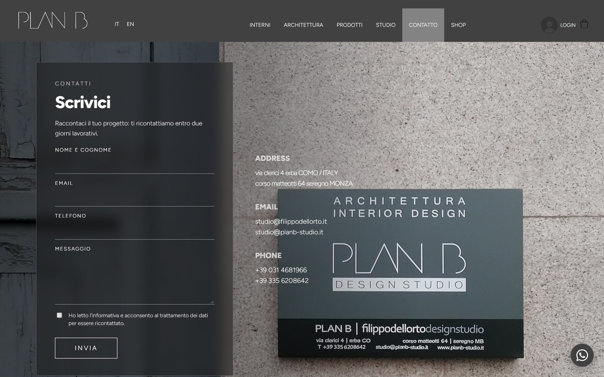
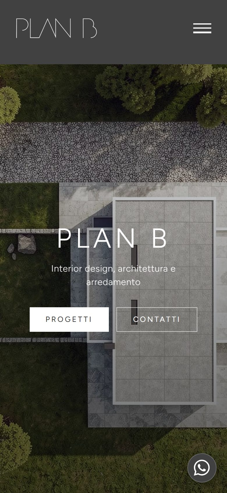
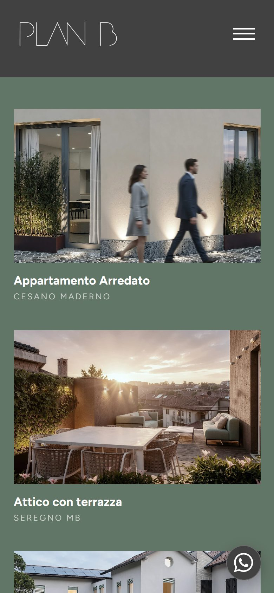
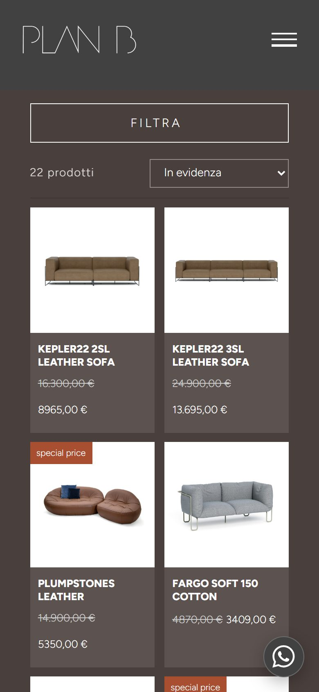

01Il nuovo sito
Il nuovo sito di PLAN B Filippo Dell'Orto Design Studio: l'identità visiva, i componenti, le pagine e gli interventi fatti, con quello che resta da completare prima della pubblicazione.
Interior design, architettura e arredamento
02Identità e tono
L'identità del sito non è solo una palette: è un carattere usato sempre allo stesso modo, una gerarchia riconoscibile, pochi colori con un compito preciso e un modo di parlare.
Tipografia e gerarchia
Figtree 800, maiuscolo, spaziatura stretta. Uno solo per pagina, in apertura.
300 maiuscolo, spaziatura ampia; il numero in 800. Dice dove si è.
300, interlinea ampia, righe corte e centrate nelle testate.
Nome in 700, luogo in 300 maiuscolo spaziato. Sotto ogni progetto.
300 maiuscolo spaziato, bordo sottile. Nessun angolo arrotondato.
Figtree sostituisce l'Avenir del sito di partenza: proporzioni quasi uguali, licenza libera per il web. È l'unico carattere del sito.
Colore, con il contrasto misurato
Contrasto del testo bianco su ciascun colore, misurato sulle pagine del sito (soglia WCAG AA 4,5 : 1). Anche il tasto WhatsApp usa il grigio struttura: nessun colore estraneo alla palette.
Tono
Scorri per entrare nella casa.Home · apertura
Raccontaci il tuo progetto: ti ricontattiamo entro due giorni lavorativi.Contatti · modulo
Raffinatezza e proporzioni perfette, eleganza formale e innovazione stilistica.Prodotti · introduzione
Parliamo del tuo progetto.Home mobile · chiusura
03Componenti
Pochi elementi, ripetuti con coerenza: chi visita impara il sito alla prima pagina e lo ritrova uguale nelle altre.
Componenti
03Soggiorno
Categoria
04Le pagine
Trentatré pagine, tutte con i contenuti reali dello studio: progetti, prodotti, schede e recapiti.

HomeIl viaggio 3D nella villa, sette tappe

Interni e ArchitetturaGriglia di progetti con didascalia

Shop e Outlet22 prodotti, filtri fissi a sinistra

ContattiIl modulo con i recapiti attorno



Da telefono
Su mobile la home rinuncia al 3D: apertura con foto e due bottoni, poi le quattro aree e il contatto. Le gallerie diventano una colonna con didascalie leggibili, lo shop due colonne con i filtri in un pannello laterale.
Altre pagine
Studio, Consulenze, Prodotti, la pagina categoria e le 22 schede prodotto, ognuna con foto, prezzi e descrizione.
05Interventi
Cosa è cambiato rispetto alla prima versione, e cosa serve ancora per andare online.
Fatto
Prima della pubblicazione
06Prossimo passo
Pubblicazione su Netlify, con il dominio dello studio
Il sito è pronto